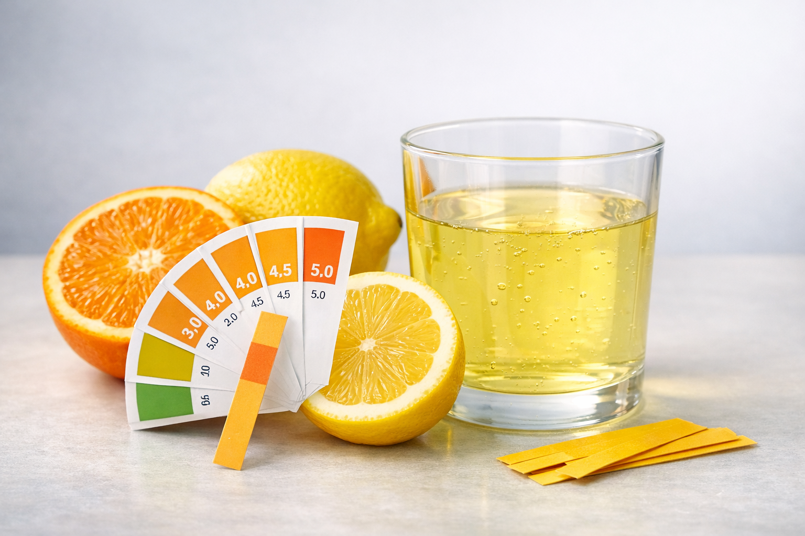
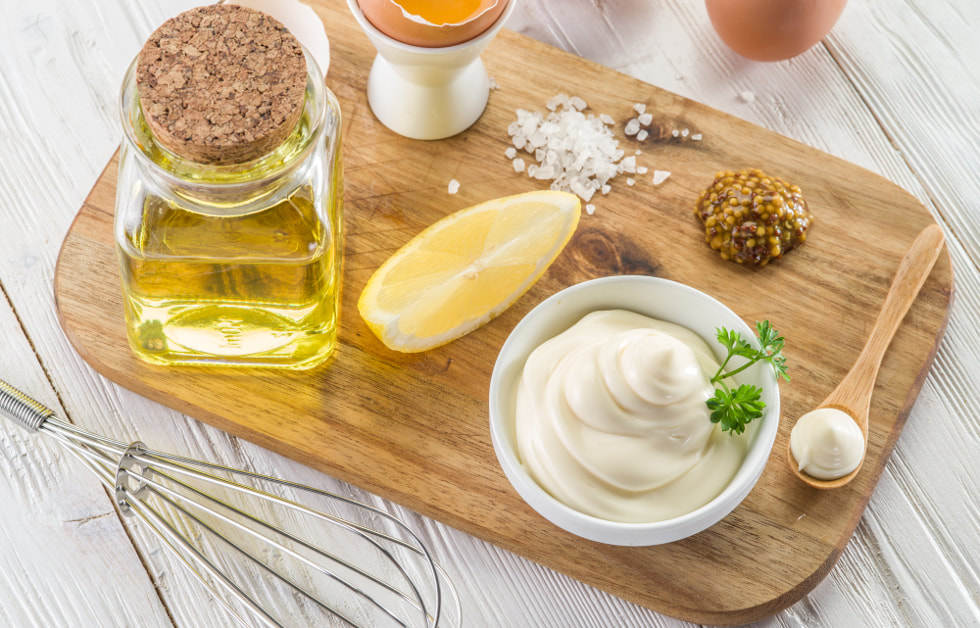
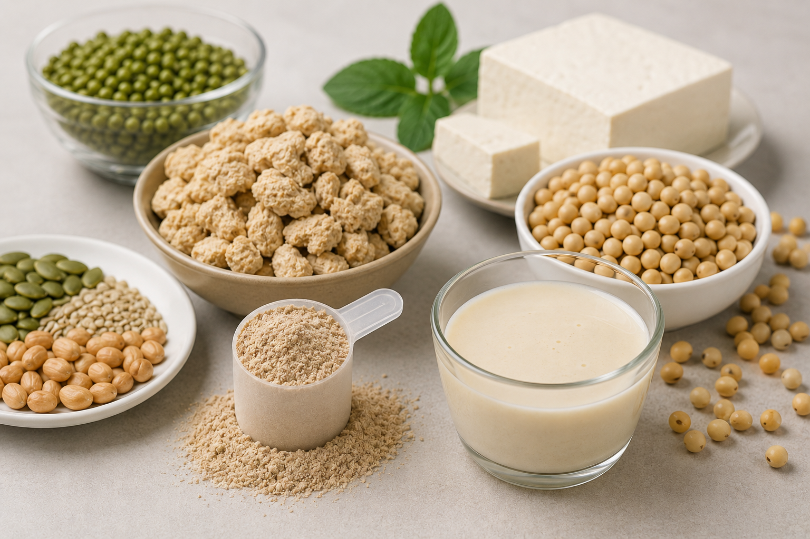
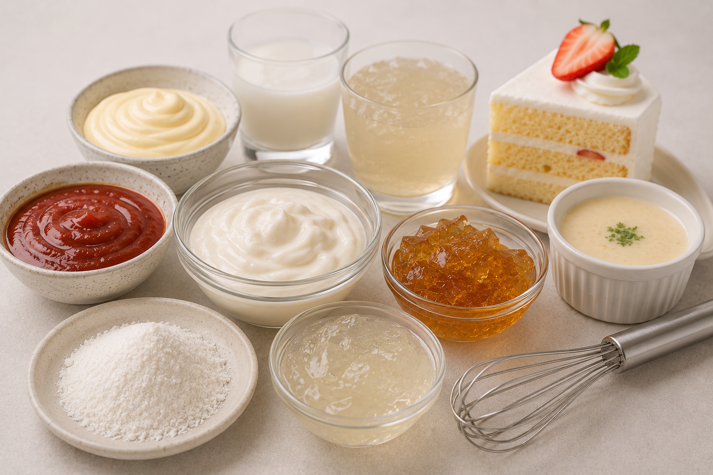

新聞資訊
化學品採購洞察與新聞資訊
我們分享圍繞產品選擇、規格判斷、出口文件與市場變化的實用內容，幫助買家更快取得有效資訊。
內容更新
近期內容
以下內容以採購場景為中心組織，適合需要比較產品、準備詢盤或跟進市場變化的國際買家。




新聞資訊
我們分享圍繞產品選擇、規格判斷、出口文件與市場變化的實用內容，幫助買家更快取得有效資訊。
內容更新
以下內容以採購場景為中心組織，適合需要比較產品、準備詢盤或跟進市場變化的國際買家。



